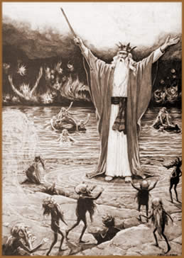
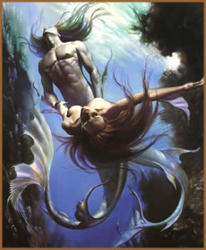

Também conhecidos por Espíritos
da Natureza, os Elementais podem ser compreendidos, sob uma
definição laica, como seres (criaturas físicas
ou espirituais) que habitam os quatro reinos da natureza (água,
fogo, terra e ar) e podem exercer influência sobre os seres
vivos.
O fundamento que conceitua e aborda
a existência de seres da natureza teria origem no Bramanismo,
antiga filosofia religiosa da Índia, antecessora do hinduísmo.
Do mesmo modo, desde as primeiras civilizações surgidas,
há referências sobre seres oriundos e habitantes
da própria natureza. Na Grécia, Roma, Egito, China
e Índia, acreditava-se na existência de seres que
habitavam as águas, o ar, o fogo e a terra. Os gregos antigos
referiam-se a estes seres como daemon (demônios).
Entre os romanos, eram chamados de Genius Loci (Gênio
Local) e eram alvos de adoração pela qual erigiam-se
templos. Mesmo no folclore brasileiro, alguns personagens (como
a Caipora e Mãe-d’água)
possuem características comuns aos elementais.
A palavra elemental pode significar
mente de Deus. Sendo assim, a origem destes seres poderia
também estar diretamente associada a Deus. Neste caso,
seriam "emanações" diretas da entidade
criadora, que foram lançadas na Terra e encontram-se em
processo constante de aprimoramento espiritual e moral. Ainda,
antigas tradições afirmavam que todos os elementos
da natureza possuem um "princípio inteligente".
Deste modo, os elementais seriam diferentes.
Há alguns pontos curiosos
sobre as lendas que circundam os elementais. Um ponto interessante
é que mesmo pertencendo a reinos distintos, de modo que
um não tenha possibilidade de penetrar nos outros reinos,
os elementais poderiam travar verdadeiras batalhas entre si em
"campo neutro"; ou seja, o mundo físico em que
vive o ser humano. Os antigos acreditavam que, por exemplo, quando
um raio atingia uma montanha, era um sinal de que elementais do
ar atacavam elementais da terra. Ainda, uma mulher que gere uma
criança sem que tenha ocorrido a copulação,
terá este fato atribuído à ação
dos elementais.
Através de um ponto de vista
moderno, a crença na existência dos elementais pode
não encontrar espaço e relevância. Embora,
em diversas citações de notáveis da história
da humanidade, há várias referências, como
os filósofos Sócrates e Platão, o escultor
renascentista Benvenuto Cellini, Santo Antônio, Napoleão
Bonaparte e Sheakespeare.
O Alquimista e
os Gnomos
Paracelso,
em toda sua extensa obra, fez várias citações
diretas a respeito dos elementais. O alquimista teria tomado conhecimento
e interessado-se pelo tema em suas viagens ao oriente. Segundo
ele, os quatro elementos originais do universo eram constituídos
de dois princípios distintos: um metafísico (sutil
e vaporoso) e outro físico (substância corporal).
Os elementais seriam seres compostos do primeiro princípio,
uma substância conhecida por éter. De outro modo,
os corpos dos elementais são constituídos de uma
matéria trans-substancial; que, em momento algum, se assemelha
ao corpo físico dos homens.
Ainda, segundo Paracelso, "os Elementais
não são espíritos porque têm carne,
sangue e ossos; vivem e se reproduzem; eles falam, agem, dormem,
acordam e, conseqüentemente não podem ser chamados,
propriamente, espíritos. Estes seres ocupam um lugar entre
Homens e Espíritos, são semelhantes a ambos; lembram
homens e mulheres em sua organização e forma, e
lembram espíritos na rapidez de sua locomoção";
ainda "Os Elementais possuem habitações,
roupagens, costumes, linguagem e governo próprios, no mesmo
sentido que as abelhas têm suas rainhas e os bandos e/ou
comunidades animais têm seus líderes" (Philosophia
Occulta – Tradução de Franz Hartman).
O alquimista medieval ainda afirma que os elementais
não são imortais. Sua longevidade estaria entre
300 e 1000 anos. Ao morrerem, se desintegram e retornam a substância
da qual se originou. Os elementais pertencentes ao plano terrestre
têm uma probabilidade menor de vida; enquanto os elementais
do ar tendem a viver por um período maior. Os seres humanos,
por não disporem de total desenvolvimento de suas capacidades
psíquicas e espirituais, não seriam capazes de ver
ou se relacionar diretamente com os elementais.
Os reinos
dos elementais
Segundo Paracelso, os elementais dividem-se em
quatro "categorias" distintas, sendo que cada uma está
associada a um reino da natureza. Em outras interpretações,
os elementais também estão associados a um ponto
cardeal e a um dos quatro principais signos do zodíaco;
sendo os gnomos ao norte e ao signo de Touro, ondinas ao oeste
e ao signo de Escorpião, salamandras ao sul e ao signo
de Leão e silfos ao leste e ao signo de Aquário.
Na citação direta de Paracelso:
"habitam os quatros elementos: Ninfas, na água;
Silfos, no ar; Pygmies, da terra e Salamandras, no fogo. São
também chamados Ondinas, Silvestres, Gnomos e Vulcanos.
Cada espécie somente pode habitar e locomover-se no Elemento
ao qual pertence e nenhum pode subsistir fora do Elemento apropriado.
O Elemento está, para o Elemental, como a atmosfera está
para o Homem; como a água para os peixes e nenhum deles
sobrevive em elemento pertencente à outra classe. Para
o Ser Elemental o Elemento no qual ele vive é transparente,
invisível e respirável, como a atmosfera para nós
mesmos" (Philosophia Occulta – Tradução
de Franz Hartman).
Gnomos
Os gnomos são os elementais correspondentes
ao reino da terra e subdividem-se em duas classes: os Pygmies
e uma segunda classe denominada Espíritos das Árvores
e das Florestas que abrange os silvestres, os sátiros,
os pans, as dríades, hamadríades,
durdalis, elfos e os duendes.
Os Pygmies atuam com pedras preciosas
e metais que inclui o corte dos cristais de rocha e o desenvolvimento
dos veios minerais. São guardiões de tesouros ocultos
e habitam cavernas e subterrâneos que as antigas tradições
escandinavas denominavam Land of the Nibelungen (Terra
dos Nibelungos). Os Espíritos das Árvores e das
Florestas estão associados a elementos da natureza terrena
de um modo geral, como as Hamadríades que nascem
e morrem com as plantas ou árvores das quais fazem parte.
De um modo mais abrangente, os elementais pertencentes
ao reino da terra e à vida vegetal, atuam na própria
criação e proteção dos indivíduos,
rejeitando nutrientes, preservando as sementes, entre outras atividades.
Há uma organização social
formada por famílias de gnomos e uma hierarquia encabeçada
por um rei. Sobre seu comportamento, alguns autores afirmam que
são seres hábeis, inteligentes e amigáveis
ao ser humano. Outras fontes asseguram que podem ser extremamente
maldosos. Entretanto, em qualquer situação, após
conquistar sua confiança, o gnomo torna-se solícito
e cooperativo. Seriam, ainda, excelentes companheiros para auxiliar
no sucesso de tarefas mágicas, desde que estas fossem realizadas
com propósitos benéficos. Caso contrário,
ao perceber más intenções e sentir-se traído,
o elemental volta-se contra o mago.
Ondinas
As
ondinas são os elementais pertencentes ao reino
da água. Por uma associação natural do simbolismo
da água ao pólo feminino da criação,
os seres deste reino são comumente representados como mulheres.
Há diversas classes de ondinas, como oreades,
nereidas, náiades e as mais populares
sereias. Estando cada classe relacionada a uma situação
determinada, como rios, lagos, cachoeiras e oceanos.
As ondinas são capazes de interagir livremente
com criaturas aquáticas. Em seu aspecto "físico",
uma ondina possui o dorso de uma mulher e os membros inferiores
substituídos por uma cauda de peixe. Embora, eventualmente,
possam trans- figurar-se provisoriamente em humano e conviver
normalmente entre os homens. Relatos sobre ondinas (geralmente
classificadas como sereias) que emitem um canto hipnótico
e atraem marinheiros às profundezas das águas são
comuns em diversas culturas. Em seu comportamento, são
consideradas seres emotivos e amigáveis com o homem, a
ponto de servir aos humanos.
Salamandras
As salamandras estão relacionadas ao fogo.
De acordo com as crenças dos místicos medievais,
não há fogo ou calor sem que as salamandras atuem.
Entre os elementais, são consideradas as mais poderosas
e menos amistosas ao homem. Do mesmo modo que os outros elementais,
as salamandras estão subdivididas em classes. A mais conhecida
destas classes e denominada Acthnici.
Sobre estes seres, Paracelso diz que "salamandras
têm sido vistas de diversas formas desde bolas de fogo até
línguas de fogo, correndo sobre os campos ou espreitando
nas casas". Outras crenças atribuíam aparições
de salamandras em uma forma esférica flutuando pela noite
acima das águas; também como forquilhas de chamas
sobre os rebanhos de ovelhas (esta segunda situação
é conhecida como o Fogo de Santelmo).
Seu aspecto assemelha-se à lagartos. Ainda,
para que um humano possa conectar-se com estes seres, eram fabricados
incensos que, através da fumaça produzida, estes
elementais poderiam se manifestar.
Silfos
Os silfos pertencem ao quarto reino da natureza,
o ar. Porém, o ar (como elemento) referido não é
a atmosfera propriamente dita, e sim uma substância muito
mais sutil e intangível ao homem. Entre os silfos, enquadram-se
as conhecidíssimas Fadas.
Era comum a crença de que estes seres habitavam
o cume das mais altas montanhas da Terra ou as nuvens. Segundo
as antigas crenças, os silfos têm por função
modelar os cristais de gelo para que transformem-se em flocos
de neve. Sua longevidade atingia em torno de 1000 anos e teriam
a capacidade de transmutar temporariamente sua aparência
de modo a se assemelharem aos humanos. Seu comportamento é
alegre, volúvel e excêntrico.
Elementais
& Culturas
Sob o ponto de vista dos primeiros
anos do cristianismo, todas as classes de elementais foram reunidas
e consideradas como daemon (demônios). Por conseqüência,
a estes seres foi atribuída uma imagem negativa que, em
alguns casos, permanece atualmente. Elementais também foram
confundidos com Súcubos e Incubos.
Há um registro interessante,
atribuído a São Jerônimo, de um sátiro
(elemental pertencente ao reino da terra) que havia sido capturado
durante o reinado do imperador romano Constantino. Esta criatura
seria fisicamente semelhante a um humano; entretanto, possuía
chifres e pés de caprinos. O sátiro, após
a morte, teria tido seu corpo preservado em sal e sido entregue
ao imperador.
As tradições
pagãs européias promoviam rituais para conectar-se
com os elementais de modo que estes pudessem intervir na prosperidade
das colheitas. Sob a análise da angelologia, os elementais
seriam formas inferiores de anjos. Do mesmo modo que os anjos
atuam conduzindo a energia criadora sobre os homens, os elementais
seriam responsáveis pela condução desta energia
e direcioná-la aos reinos minerais, vegetais, etc.
No início do século
XX, precisamente em 1917, duas crianças inglesas, Frances
Griffiths e Elsie Wright, apresentaram fotografias nas quais,
supostamente, brincavam com fadas em um bosque na região
em que moravam. A farsa foi dissolvida apenas no início
da década de 80, quando as mesmas garotas, já idosas,
confessaram: as fadas haviam sido feitas de papel e presas por
alfinetes.
Atualmente, os elementais
estão fortemente associados a doutrinas esotéricas
bastante diversificadas entre si, e a imagem de gnomos e fadas
tornou-se quase um arquétipo no ocidente. É possível,
aos mais céticos, negar a existência destas criaturas;
entretanto, não é possível ignorar a significância
e profundidade da influência que os elementais exercem em
diversos aspectos culturais das sociedades ao longo dos tempos.
Por
Spectrum